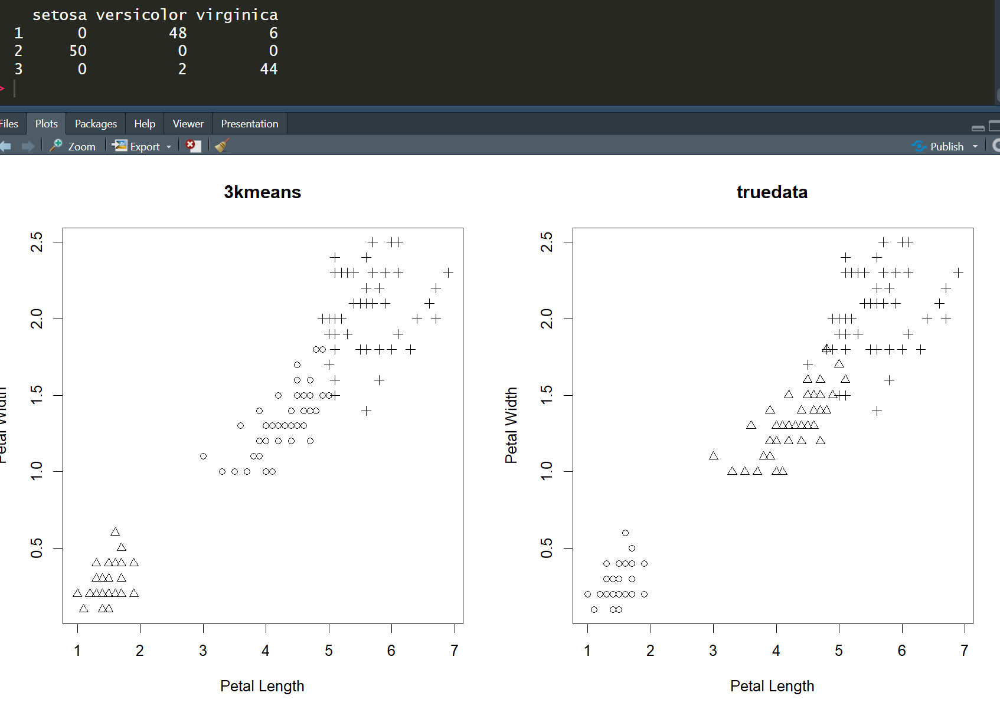

Question1
flowchart TD
A[定义问题与目标] --> B[数据收集与理解];
C[数据清洗和预处理];
D[特征工程];
D --> E[模型训练];
E --> F[模型评估];
G{性能是否满意?};
G -- 否 --> D;
G -- 否 --> E;
G -- 是 --> H[模型预测/应用];
subgraph A [阶段一：问题定义]
end
subgraph B_C_D [阶段二：数据准备]
direction LR
B --> C --> D;
end
subgraph E_F_G [阶段三：建模与迭代]
direction LR
E --> F --> G;
end
subgraph H [阶段四：应用]
end
Question2
- 训练集
- 用于训练模型的数据集
- 测试集
- 用于测试模型效果的数据集
- 意义
- 验证模型的可靠性
- 多模型时选择最优模型的方式
- 欠拟合
- 模型在训练集上表现不佳，模型能力过弱
- 过拟合
- 模型过度捕捉训练集信息，导致其在测试集上表现不佳，模型能力过强（加入噪声等）
Question3
-
监督学习
- 根据某种已知的结果对模型进行评分和调整，预测变量和响应变量已知。
-
无监督学习
- 模型从数据中总结预测函数f和信息，自行决定已知结果并调整参数。
-
回归
- 响应变量为定量变量
-
分类
- 响应变量为定性变量
-
混合类
-
Summary
学习类型 数据特点 任务目标 例子 监督学习 有标签数据 学习输入到输出的映射 线性回归、逻辑回归、决策树 无监督学习 无标签数据 发现数据内在结构 K-means、PCA、关联规则 分类任务 离散输出 预测类别标签 逻辑回归、SVM、随机森林 回归任务 连续输出 预测数值 线性回归、决策树回归
Question4
回归
-
均方误差（MSE）：预测值与真实值之差的平方的平均值
-
均方根误差（RMSE）：MSE的平方根，与目标变量单位相同
-
平均绝对误差（MAE）：预测值与真实值之差的绝对值的平均值
-
决定系数（R²）：模型解释的方差比例，取值范围0-1，越接近1越好
分类
-
TP:真阳性
-
TN:真阴性
-
FP:假阳性
-
FN:假阴性
-
准确度 Accuracy：判断的正确率
-
灵敏度sensitivity/召回率recall/命中率hit rate：真实阳性被检测出的比例
-
特异度specificity：真实阴性被检测出的比例
-
精度 : 判断为阳性的正确率
-
F1分数：精度和召回度的调和平均数
交叉验证
将整个数据集分割为多个训练块和测试块，评估每块数据的误差，然后取最终误差的平均值进行评估
- k折交叉验证：将数据分为k个子集，每次用k-1个子集训练，1个子集测试，重复k次
- 留一交叉验证：k折交叉验证的特例，k等于样本数
- 分层k折交叉验证：保持每个折中类别比例与原始数据集相同
1 | # 汽车数据集 |

Question5
LASSO的目标函数：
即
LASSO回归在普通的线性回归基础上加入L1范数惩罚项，使变量的系数可以为0
Question6
随机森林是一种集成学习方法，通过构建多棵决策树并将它们的预测结果组合起来，以提高预测准确性和模型的鲁棒性。
决策树过程
-
从原始数据集中通过自助采样法抽取多个样本子集
-
为每个样本子集构建一棵决策树
-
在每棵树的每个节点分裂时，随机选择特征子集进行考虑
-
将所有树的预测结果进行组合（分类任务使用投票，回归任务使用平均）
Question7
支持向量机SVM是一种监督学习算法，可用于分类和回归任务。SVM的核心思想是找到一个最优的超平面，将不同类别的数据点分开，同时最大化边界（间隔）。
Question8
由大量相互连接的节点（神经元）组成。输入向量经过神经网络得到输出向量。
神经网络的基本组成
-
神经元
- 神经网络的基本处理单元
-
层
- 输入层
- 接收原始特征
- 隐藏层
- 进行特征变换和模式学习
- 输出层
- 产生最终预测
- 输入层
-
权重和偏置
- 连接神经元之间的参数
-
激活函数
- 非线性函数模拟神经元的激活过程，使网络能够学习复杂模式
Question9
PCA用于对具有多个预测变量的数据进行降维，对原始预测变量进行线性组合得到正交基，称为主成分，按照方差大小降序排序。一般取前两个主成分。